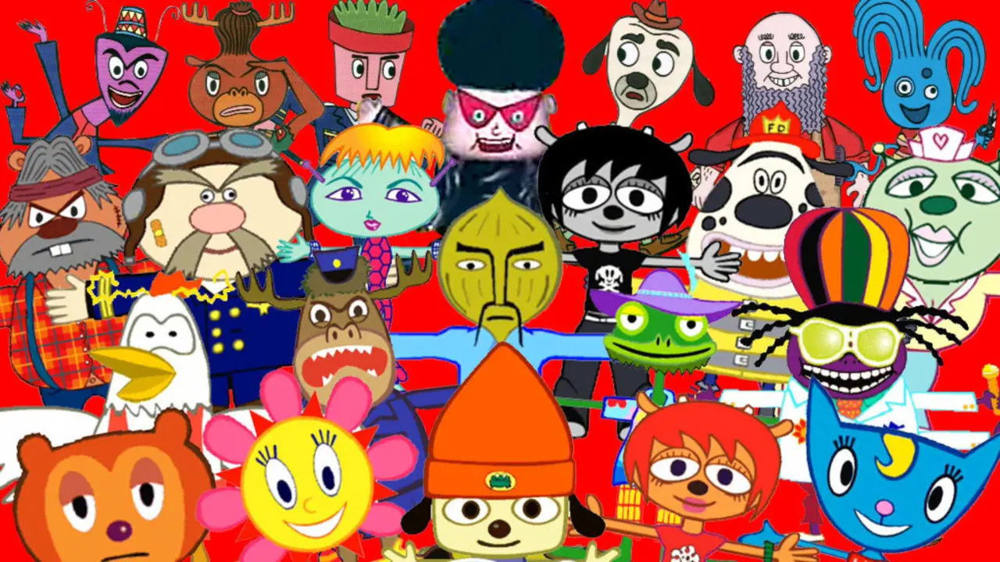
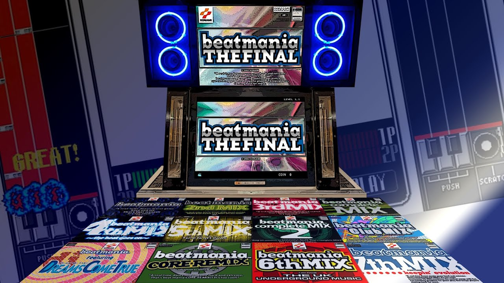
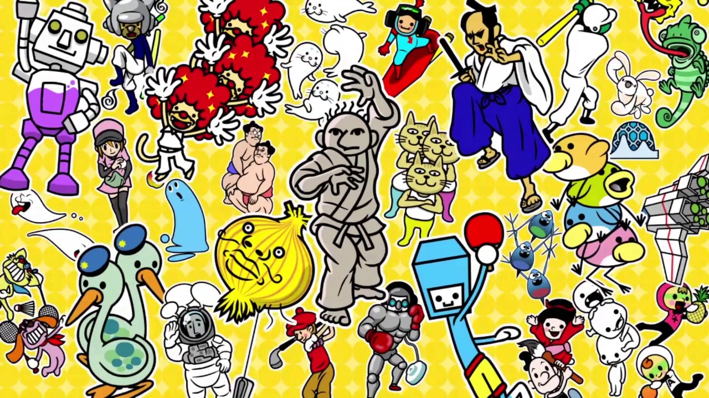
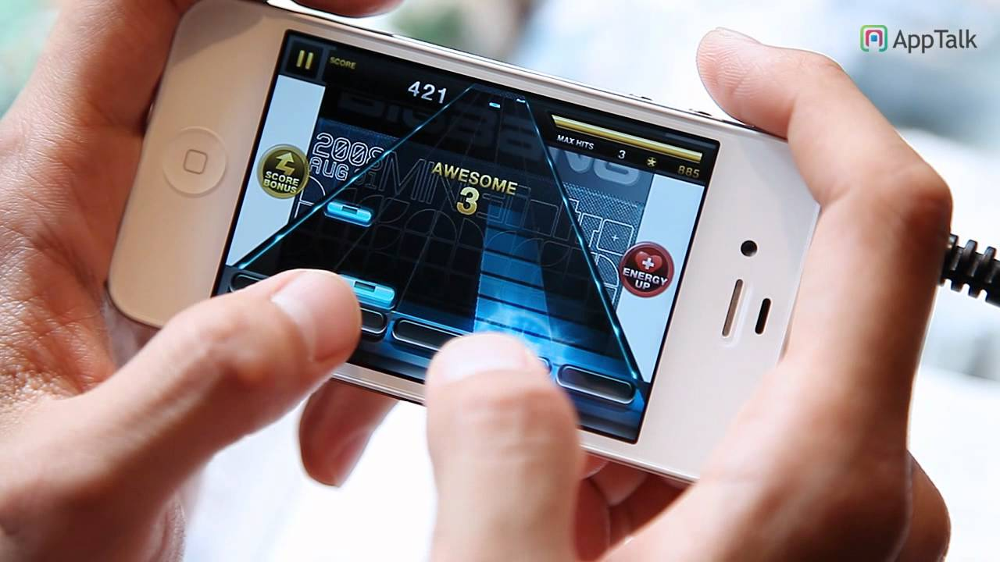
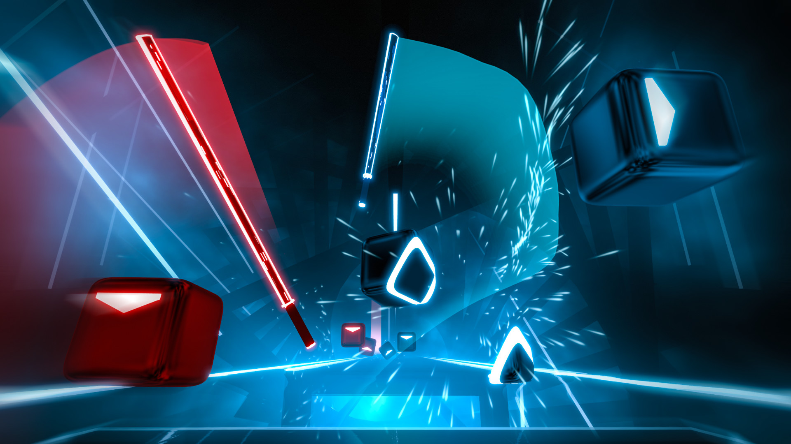

플레이어가 리듬이나 음악에 맞춰서 조작하거나 동작을 취해야 하거나게임 진행에서 음악이나 리듬이 주 요소가 되는 게임 장르이다.체감형 게임의 일종으로 분류한다.

'음악 게임'이라는 장르를 처음으로 명시한 게임이다. 특정한 버튼을 정확한 타이밍에 맞게 누르는 것으로 연주를 할 수 있으며 얼마나 잘 연주했는지에 따라 최종 결과가 달라지는, 흔히 리듬 게임 하면 생각나는 대부분의 구성 요소를 갖추고 있었다.

리듬 게임 장르 자체가 본격적으로 대중적인 인기를 얻게 된 계기가 된 게임이다. 이에 탄력을 받은 코나미는 BEMANI라는 브랜드를 걸고 〈팝픈뮤직〉, 〈댄스 댄스 레볼루션〉을 내놓았으며, 특히 댄스 댄스 레볼루션이 선풍적인 인기를 끌면서 아케이드를 중심으로 리듬 게임의 최전성기를 맞이하게 된다.

2000년대 들어 아케이드 산업이 조금씩 쇠퇴하고, 가정용 게임기의 성능이 충분히 좋아지다 보니 콘솔에서 독자적인 리듬 게임 시리즈가 만들어졌었다. 휴대용 콘솔로는 〈응원단 시리즈〉, 〈리듬 천국 시리즈〉 등이 나왔으며, PC 온라인 게임으로는 〈오투잼〉, 〈DJMAX 온라인〉, 〈알투비트〉, 〈이지투온〉 등이 나왔다.

2010년 스마트폰이 대중화되어 스마트폰용 리듬 게임이 나오기 시작했다. 피처폰은 성능의 한계로 리듬 게임을 하기 매우 부적합한 환경이었지만, 스마트폰은 터치스크린이라는 입력 특성과 전반적인 하드웨어 성능 향상, 좋은 휴대성 덕분에 어디든지 들고 가서 즐길 수 있었기 때문이었다. 2011년 네오위즈가 모바일 오리지널 리듬 게임인 TAPSONIC을 출시하면서 큰 인기를 끌었고, 지금도 다양한 회사에서 꾸준히 출시하고 있다.

2010년대 중후반에는 VR용 게임이 나오기 시작한다. 아직 태동기지만 비트 세이버가 엄청난 성공을 거두며 VR계의 대표 리듬 게임으로 인식되고 있다. 또한 이 시기부터는 새로운 플레이 방식을 도입하거나 다른 장르와 융합하는 등 다양한 시도가 이루어졌다. 대표적으로 리듬 제세동으로 환자를 치료하는 〈Rhythm Doctor〉, 로그라이크 요소를 결합한 〈Crypt of the NecroDancer〉, 음악에 맞춰 날아오는 탄막을 피하는 〈Just Shapes & Beats〉와 〈Project Arrhythmia〉 등이 있으며, ‘리듬에 맞춰 행동한다’는 개념을 게임 전반에 녹여내며 호평을 받았다.